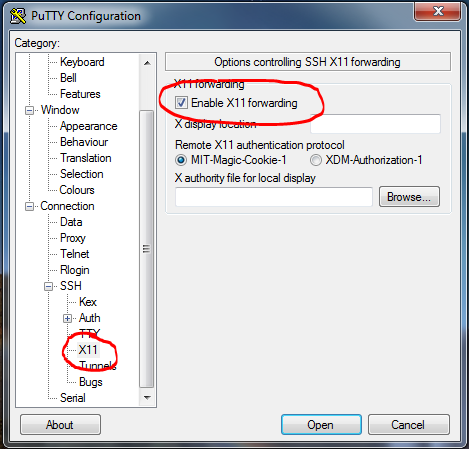
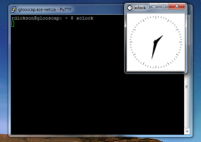

If you want to use certain GUI-based tools then you need to make sure that you are connected to the head node of the cluster with X11 forwarding enabled in your SSH client. This will allow an application on the cluster to display graphics on your desktop.
Users need to run the X11 server on their desktops. If you are running any window manager then you already have the X11 server installed. When you connect to the head node you must also use the -X option for the SSH client
$ ssh -X servername.ace-net.ca

A simple test of whether you have X11 working properly is to log on to a cluster and type
$ xclock
It should open a simple clock application new window looking something like this:
